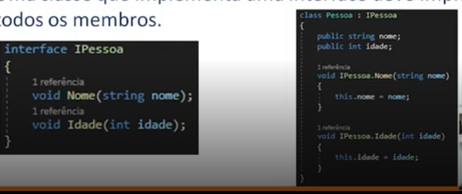
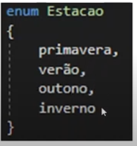

É uma framework que permite a comunicação entre várias linguagens de infraestrutura comum, como o Visual Basic, C++,F# e C#.
C# é uma linguagem OO fortemente tipada.
São usados para organizar, separar classes. Para usar classes de outro namespace colocamos o termo using no início do código.
using System;
namespace CSharp
{
Console //método do System
}
namespace CSharp
{
System.Console //método do System
}
O namespace System é um namespace nativo do .NET e portando pode ser usada em qualquer projeto. Como vimos, um namespace nativo pode ser acessada das duas formas mostradas acima.
É como se fosse um construtor de objetos, tal qual as classes do javascript. Os atributos de uma classe são chamados de membros.
class NomeClasse{
public string Nome { get; set; }
}
Os membros são definidos pela sintaxe escopo tipo nome (get; set;). A professora não explicou porque, mas no dela o escopo é public em todos. Também não explicou nenhum outro parâmetro.
Quando vamos instanciar um objeto de uma classe, nós ao invés de declararmos a variável com o termo var nós colocamos um "tipo explícito" (que recebe qualquer valor que queremos, mas ela escreveu com letra maiúscula).
A sintaxe para instanciamento de uma classe é: ~ var || TipoExplicito ~ nome = new Classe();
Interface é uma classe base para criar outras classes.
Um conjunto de constantes nomeadas que começam indexadas em 0 e esses índices vão incrementando de 1 a 1.
Podemos colocar a bolinha na barra lateral esquerda ou então selecionar a linha na qual queremos parar e depois apertarmos f9. Ao executar o código ele irá ser interrompido na linha marcada.
Segundo a professora, métodos não static "não rodam".
A partir do breakpoint nós podemos ir apertando f10 para ir executando as linhas uma a uma. Para executar tudo de uma vez damos o f5.
A microsoft tem documentação .net e c#.